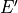
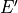

fudge.processing.deterministic package¶
Submodules¶
fudge.processing.deterministic.transferMatrices module¶
This module is for FUDGE internal use. This module calculates the multi-group products matrices for various types of districtions. Many of the functions in this module interface between various distribution classes and Merced.
This module contains the following functions:
Function
Description
twoBodyTransferMatrix
twoBodyTransferMatrix2
wholeAtomScattering
comptonScattering
ENDFEMuEpP_TransferMatrix
ENDLEMuEpP_TransferMatrix
ELEpP_TransferMatrix
EEpMuP_TransferMatrix
Legendre_TransferMatrix
doubleDifferential_EEpMuP
uncorrelated_EMuP_EEpP_TransferMatrix
discreteGammaAngularData
primaryGammaAngularData
NBodyPhaseSpace
KalbachMann_TransferMatrix
executeCommand
parseOutputFile
commonDataToString
GBToString
fluxToString
crossSectionToString
multiplicityToString
angularToString
energyFunctionToString
EEpPDataToString
LEEpPDataToString
LegendreDataToString
EMuEpPDataToString
EEpMuPDataToString
KalbachMannDataToString
oneDToString
twoDToString
threeDToString
threeDListToString
addTMs
- fudge.processing.deterministic.transferMatrices.EEpMuPDataToString(EEpMuPData)[source]¶
This function returns a string representation of the MT = 6 LAW = 1, LANG = 11-15 distribution data that will be writted to the Merced input file.
- Parameters:
EMuEpPData – The distribution data.
- Returns:
A python list of strings representing the distribution.
- fudge.processing.deterministic.transferMatrices.EEpMuP_TransferMatrix(style, tempInfo, productFrame, crossSection, energyAngularData, multiplicity, comment=None)[source]¶
This function calculates multi-group product matices for MT = 6 LAW = 1, LANG = 1, 11-15 data.
- Parameters:
style – This is the multi-group style for the multi-group data.
tempInfo – This is a dictionary with needed data.
crossSection – This is the pointwise linear cross section for the reaction.
productFrame – This is the frame the product data are in and must always be center-of-mass for two-body reactions.
energyAngularData – This is the distribution data for the product.
multiplicity – This is the product’s multiplicity.
comment – This is a comment that is written to the Merced input file.
- Returns:
The number and energy conserving product matices.
- fudge.processing.deterministic.transferMatrices.EEpPDataToString(EEpPData, changeInterpolationQualifierWarning=False)[source]¶
This function returns a string representation of the energy data for an uncorrelated distribution that will be writted to the Merced input file.
- Parameters:
energyData – The energy data.
changeInterpolationQualifierWarning – A boolean indicating if a warning message should be printed if the angular data’s interpolation qualifier is not used.
- Returns:
A python list of strings representing the energy distribution.
- fudge.processing.deterministic.transferMatrices.ELEpP_TransferMatrix(style, tempInfo, crossSection, productFrame, LEEpPData, multiplicity, comment=None)[source]¶
This function calculates multi-group product matices for ENDL I = 4 data with l > 0.
- Parameters:
style – This is the multi-group style for the multi-group data.
tempInfo – This is a dictionary with needed data.
crossSection – This is the pointwise linear cross section for the reaction.
productFrame – This is the frame the product data are in and must always be center-of-mass for two-body reactions.
LEEpPData – This is the distribution data for the product (i.e., ENDL I = 4 data).
multiplicity – This is the product’s multiplicity.
comment – This is a comment that is written to the Merced input file.
- Returns:
The number and energy conserving product matices.
- fudge.processing.deterministic.transferMatrices.EMuEpPDataToString(EMuEpPData)[source]¶
This function returns a string representation of the MF = 6, LAW = 7 distribution data that will be writted to the Merced input file.
- Parameters:
EMuEpPData – The distribution data.
- Returns:
A python list of strings representing the distribution.
- fudge.processing.deterministic.transferMatrices.ENDFEMuEpP_TransferMatrix(style, tempInfo, productFrame, crossSection, angularEnergyData, multiplicity, comment=None)[source]¶
This function calculates multi-group product matices for ENDF MF = 6, LAW = 7 type data.
- Parameters:
style – This is the multi-group style for the multi-group data.
tempInfo – This is a dictionary with needed data.
productFrame – This is the frame the product data are in and must always be center-of-mass for two-body reactions.
scatteringFactor – This is the incoherent scattering function.
comment – This is a comment that is written to the Merced input file.
- Returns:
The number and energy conserving product matices.
- fudge.processing.deterministic.transferMatrices.ENDLEMuEpP_TransferMatrix(style, tempInfo, crossSection, productFrame, angularData, EMuEpPData, multiplicity, comment=None)[source]¶
This function calculates multi-group product matices for ENDL I = 1, 3 type data.
- Parameters:
style – This is the multi-group style for the multi-group data.
tempInfo – This is a dictionary with needed data.
crossSection – This is the pointwise linear cross section for the reaction.
productFrame – This is the frame the product data are in and must always be center-of-mass for two-body reactions.
angularData – This is the angular distribution data for the product (i.e., ENDL I = 1 data).
EMuEpPData – This is the energy distribution data for the product (i.e., ENDL I = 3 data).
multiplicity – This is the product’s multiplicity.
comment – This is a comment that is written to the Merced input file.
- Returns:
The number and energy conserving product matices.
- fudge.processing.deterministic.transferMatrices.GBToString(name, gb, energy_in_unit)[source]¶
This function returns a string representation of the multi-group boundaries that will be writted to the Merced input file.
- Parameters:
name – Either the string ‘Projectile’ or ‘Product’.
gb – The list of multi-group boundaries.
energy_in_unit – The unit that the boundaries will be converted to before processing.
- Returns:
A python list of strings representing the multi-group boundaries.
- fudge.processing.deterministic.transferMatrices.KalbachMannDataToString(KalbachMannData, energy_in_unit)[source]¶
This function returns a string representation of the Kalbach/Mann distribution data that will be writted to the Merced input file.
- Parameters:
EMuEpPData – The distribution data.
energy_in_unit – The unit that the energies will be converted to before processing.
- Returns:
A python list of strings representing the distribution.
- fudge.processing.deterministic.transferMatrices.KalbachMann_TransferMatrix(style, tempInfo, crossSection, particlesData, KalbachMannData, multiplicity=1, comment=None)[source]¶
This function calculates multi-group product matices for a Kalbach/Mann distribution.
- Parameters:
style – This is the multi-group style for the multi-group data.
tempInfo – This is a dictionary with needed data.
crossSection – This is the pointwise linear cross section for the reaction.
KalbachMannData – This is the Kalbach/Mann data.
multiplicity – This is the product’s multiplicity.
comment – This is a comment that is written to the Merced input file.
- Returns:
The number and energy conserving product matices.
- fudge.processing.deterministic.transferMatrices.LEEpPDataToString(LEEpPData)[source]¶
This function returns a string representation of the ENDL I = 4 data with l > 0 distribution data that will be writted to the Merced input file.
- Parameters:
LEEpPData – The ENDL I = 4 data.
- Returns:
A python list of strings representing the distribution.
- fudge.processing.deterministic.transferMatrices.LegendreDataToString(LegendreData, changeInterpolationQualifierWarning=False)[source]¶
This function returns a string representation of the MT = 6 LAW = 1, LANG = 1 distribution data that will be writted to the Merced input file.
- Parameters:
LegendreData – The distribution data.
changeInterpolationQualifierWarning – A boolean indicating if a warning message should be printed if the angular data’s interpolation qualifier is not used.
- Returns:
A python list of strings representing the distribution.
- fudge.processing.deterministic.transferMatrices.Legendre_TransferMatrix(style, tempInfo, productFrame, crossSection, LegendreData, multiplicity, comment=None)[source]¶
This function calculates multi-group product matices for MT = 6 LAW = 1, LANG = 1 data. This function is for internal use.
- Parameters:
style – This is the multi-group style for the multi-group data.
tempInfo – This is a dictionary with needed data.
productFrame – This is the frame the product data are in and must always be center-of-mass for two-body reactions.
crossSection – This is the pointwise linear cross section for the reaction.
LegendreData – This is the distribution data for the product.
multiplicity – This is the product’s multiplicity.
comment – This is a comment that is written to the Merced input file.
- Returns:
The number and energy conserving product matices.
- fudge.processing.deterministic.transferMatrices.NBodyPhaseSpace(style, tempInfo, crossSection, numberOfProducts, mTotal, Q, multiplicity=1, comment=None)[source]¶
This function calculates multi-group product matices for an n-body phase space distribution.
- Parameters:
style – This is the multi-group style for the multi-group data.
tempInfo – This is a dictionary with needed data.
crossSection – This is the pointwise linear cross section for the reaction.
numberOfProducts – This is the number of products.
mTotal – This is total mass of the particles.
Q – This is the Q-value.
multiplicity – This is the product’s multiplicity.
comment – This is a comment that is written to the Merced input file.
- Returns:
The number and energy conserving product matices.
- fudge.processing.deterministic.transferMatrices.addTMs(TMs)[source]¶
Returns the sum of the product matrices in TMs.
- Parameters:
TMs – A list of product matrices.
- Returns:
Returns a product matrix that is the sum of the product matrices in TMs.
- fudge.processing.deterministic.transferMatrices.angularToString(angularData, crossSection, weight=None, twoBody=False, changeInterpolationQualifierWarning=False)[source]¶
This function returns a string representation of the angular data that will be writted to the Merced input file.
- Parameters:
angularData – The angular data.
crossSection – The cross section for the reaction.
weight – This is the pointwise linear weight to multiply the kernal of the integral by.
twoBody – A boolean indicating if the interaction is two-body.
changeInterpolationQualifierWarning – A boolean indicating if a warning message should be printed if the angular data’s interpolation qualifier is not used.
- Returns:
A python list of strings representing the angular distribution.
- fudge.processing.deterministic.transferMatrices.commonDataToString(comment, style, tempInfo, crossSection, productFrame, multiplicity=None, energy_in_unit=None, weight=None, photonFrame=Frame.lab, legendreMax=None, modifiedProductGroup=None)[source]¶
This function converts common data needed to calculate any of the distribution product matrices to a list of string and returns the list.
- Parameters:
comment – This is a comment that is written to the Merced input file.
style – This is the multi-group style for the multi-group data.
tempInfo – This is a dictionary with needed data.
crossSection – This is the pointwise linear cross section for the reaction.
productFrame – This is the frame the product data are in.
multiplicity – This is the product’s multiplicity.
energy_in_unit – The unit that the energy will be converted to before processing.
weight – This is the pointwise linear weight to multiply the kernal of the integral by.
photonFrame – This is the frame of the photon data.
legendreMax – This is the maximum Legendre order that the product matrices are to be calculated to.
modifiedProductGroup – This is a subset of the product groups to handle an issue in Merced.
- Returns:
A python list of strings representing the common data.
- fudge.processing.deterministic.transferMatrices.comptonScattering(style, tempInfo, productFrame, scatteringFactor, comment=None)[source]¶
This function calculates multi-group product matices for photo-atomic incoherent scattering.
- Parameters:
style – This is the multi-group style for the multi-group data.
tempInfo – This is a dictionary with needed data.
productFrame – This is the frame the product data are in and must always be center-of-mass for two-body reactions.
scatteringFactor – This is the incoherent scattering function.
comment – This is a comment that is written to the Merced input file.
- Returns:
The number and energy conserving product matices.
- fudge.processing.deterministic.transferMatrices.crossSectionToString(style, crossSection, energy_in_unit=None)[source]¶
This function returns a string representation of the cross section that will be writted to the Merced input file.
- Parameters:
style – This is not used.
crossSection – The cross section for the reaction.
energy_in_unit – The unit that the cross section energies will be converted to before processing.
- Returns:
A python list of strings representing the cross section.
- fudge.processing.deterministic.transferMatrices.discreteGammaAngularData(style, tempInfo, gammaEnergy, crossSection, angularData, multiplicity, comment=None)[source]¶
This function calculates multi-group product matices for a discrete photon distribution. Currently, only isotropic (i.e., l = 0) data are returned. That is, lMax and angularData are ignored. This routine is also used for pair-production which pass angularData as None.
- Parameters:
style – This is the multi-group style for the multi-group data.
tempInfo – This is a dictionary with needed data.
gammaEnergy – This is the energy of the discrete photon.
crossSection – This is the pointwise linear cross section for the reaction.
angularData – This is the angular distribution data for the product.
multiplicity – This is the product’s multiplicity.
comment – This is a comment that is written to the Merced input file.
- Returns:
The number and energy conserving product matices.
- fudge.processing.deterministic.transferMatrices.doubleDifferential_EEpMuP(style, tempInfo, productFrame, crossSection, EEpMuPData, multiplicity, comment=None)[source]¶
This function calculates multi-group product matices for MT = 6 LAW = 1, LANG = 11-15 data. This function is for internal use.
- Parameters:
style – This is the multi-group style for the multi-group data.
tempInfo – This is a dictionary with needed data.
productFrame – This is the frame the product data are in and must always be center-of-mass for two-body reactions.
crossSection – This is the pointwise linear cross section for the reaction.
EEpMuPData – This is the distribution data for the product.
multiplicity – This is the product’s multiplicity.
comment – This is a comment that is written to the Merced input file.
- Returns:
The number and energy conserving product matices.
- fudge.processing.deterministic.transferMatrices.energyFunctionToString(energyData, weight=None)[source]¶
This function returns a string representation of the energy data for an uncorrelated distribution that will be writted to the Merced input file.
- Parameters:
energyData – The energy data.
weight – This is the pointwise linear weight to multiply the kernal of the integral by.
- Returns:
A python list of strings representing the energy distribution.
- fudge.processing.deterministic.transferMatrices.executeCommand(logFile, executable, cmd, workDir, workFile, restart, productOffset=0)[source]¶
This function runs executable (presumably Merced) on a single input, parses resulting output file and returns two transfer matrices:
the first returned matric has weight 1 (i.e., conserves number of particles)
the second returned matrix has weight E’ (i.e., conserves energy)
If executable fails, a file named workFile + ‘_in.err’ is created in the working directory for easier searching.
- Parameters:
logFile – Currently unused! Remove argument?
executable – Executable to run which is generally Merced.
cmd – String which will be written as the input file for executable.
workDir – Directory where executable will be run. processProtare.py creates new workDir for each projectile/target/temperature.
workFile – List of form [reaction identifier, product identifier] (e.g., [‘r0001’,’n’] or [‘r0045’,’photon__b’]) used to generate unique file name for the input and output files.
restart – boolean. If True, check whether executable was previously run for this input and if so skip re-running (useful for resuming jobs that timed out).
productOffset – The product energy group where the reaction threshold energy resides.
- Returns:
The number and energy conserving product matices.
- fudge.processing.deterministic.transferMatrices.fluxToString(flux, energy_in_unit)[source]¶
This function returns a string representation of the flux that will be writted to the Merced input file.
- Parameters:
flux – The flux function.
energy_in_unit – The unit that the flux energies will be converted to before processing.
- Returns:
A python list of strings representing the flux.
- fudge.processing.deterministic.transferMatrices.multiplicityToString(style, _multiplicity, energy_in_unit=None)[source]¶
This function returns a string representation of the cross section that will be writted to the Merced input file.
- Parameters:
style – The style of the multiplicity to process.
_multiplicity – The cross section function.
energy_in_unit – The unit that the multiplicity energies will be converted to before processing.
- Returns:
A python list of strings representing the multiplicity.
- fudge.processing.deterministic.transferMatrices.oneDToString(data, factor=1)[source]¶
This function takes a list of floats and returns a list of strings representations of the floats that will be written to the Merced input file.
- Oaram data:
A list of floats.
- Oaram factor:
A number to scale each value in data by.
- Returns:
A python list of strings representing data.
- fudge.processing.deterministic.transferMatrices.parseOutputFile(file, productOffset, firstLine=None)[source]¶
This function parses the Merced output file that contains the product matrices.
- Parameters:
file – Path to the Merced output file.
productOffset – The product energy group where the reaction threshold energy resides.
firstLine – This is the first list that should be in output file which is use to verify that the file can be read.
- Returns:
The tuple (number product matrices, energy weighted product matrices, dictionary ).
- fudge.processing.deterministic.transferMatrices.primaryGammaAngularData(style, tempInfo, crossSection, energyData, angularData, multiplicity=1, comment=None)[source]¶
This function calculates multi-group product matrices for a primary photon distribution from a capture reaction. Currently, only isotropic (i.e., l = 0) data are returned. That is, lMax and angularData are ignored. massRatio is the target mass divide by the sum of the projectile and target masses.
This function perform the integration
where
 is the integral of
is the integral of  from to , is the integral of 
from to , is the cross section, is the products multiplicity,
from to , is the integral of 
from to , is the cross section, is the products multiplicity,
 is the flux weighting and
is the flux weighting and  is the probability for a projectile of energy
a primary gamma of energy for binding energy bindingEnergy. This function assumes that is a constant.
For primary gamma’s captured into binding energy bindingEnergy = deltaFunction( E’ - ( bindingEnergy + massRatio E ) )
where massRatio = , mp is the projectile’s mass and mt is the target’s mass. Note, this formula is
from the ENDF manual which ignores the recoil of the residual nucleus.
is the probability for a projectile of energy
a primary gamma of energy for binding energy bindingEnergy. This function assumes that is a constant.
For primary gamma’s captured into binding energy bindingEnergy = deltaFunction( E’ - ( bindingEnergy + massRatio E ) )
where massRatio = , mp is the projectile’s mass and mt is the target’s mass. Note, this formula is
from the ENDF manual which ignores the recoil of the residual nucleus.- Parameters:
style – This is the multi-group style for the multi-group data.
tempInfo – This is a dictionary with needed data.
crossSection – This is the pointwise linear cross section for the reaction.
energyData – This is the energy of the discrete photon.
angularData – This is the angular distribution data for the product.
multiplicity – This is the product’s multiplicity.
comment – This is a comment that is written to the Merced input file.
- Returns:
The number and energy conserving product matices.
- fudge.processing.deterministic.transferMatrices.threeDListToString(data, linearizeXYs=False)[source]¶
This function takes a pointwise 2d function (i.e., f(x,y)) and returns a list of strings representations of the data that will be written to the Merced input file.
- Parameters:
data –
linearizeXYs – A boolean indicating if the data are to be converted to poinwise data and linearized.
- Returns:
A python list of strings representing data.
- fudge.processing.deterministic.transferMatrices.threeDToString(data, linearizeXYs=False)[source]¶
This function takes a pointwise 2d function (i.e., f(x,y)) and returns a list of strings representations of the data that will be written to the Merced input file.
- Parameters:
data – The pointwise 2d data (i.e., f(x,y)).
linearizeXYs – A boolean indicating if the data are to be converted to poinwise data and linearized.
- Returns:
A python list of strings representing data.
- fudge.processing.deterministic.transferMatrices.twoBodyTransferMatrix(style, tempInfo, productFrame, crossSection, angularData, Q, weight=None, comment=None)[source]¶
This function calculates multi-group product matices from a two-body distribution which must be in the center-of-mass frame. This function allows for the distribution to have different incident energy regions. It calls
twoBodyTransferMatrix2()for each region and sums the resuts.- Parameters:
style – This is the multi-group style for the multi-group data.
tempInfo – This is a dictionary with needed data.
productFrame – This is the frame the product data are in and must always be center-of-mass for two-body reactions.
crossSection – This is the pointwise linear cross section for the reaction.
angularData – This is the angular distribution data for the product.
Q – This is the Q-value for the two-body reaction.
weight – This is the pointwise linear weight to multiply the kernal of the integral by.
comment – This is a comment that is written to the Merced input file.
- Returns:
The number and energy conserving product matices.
- fudge.processing.deterministic.transferMatrices.twoBodyTransferMatrix2(style, tempInfo, crossSection, angularData, Q, productFrame, weight=None, comment=None)[source]¶
This function calculates multi-group product matices from a two-body distribution which must be in the center-of-mass frame. This function is called by
twoBodyTransferMatrix()to handle one region of the distrition. This function is for internal use.- Parameters:
style – This is the multi-group style for the multi-group data.
tempInfo – This is a dictionary with needed data.
crossSection – This is the pointwise linear cross section for the reaction.
angularData – This is the angular distribution data for the product.
Q – This is the Q-value for the two-body reaction.
productFrame – This is the frame the product data are in and must always be center-of-mass for two-body reactions.
weight – This is the pointwise linear weight to multiply the kernal of the integral by.
comment – This is a comment that is written to the Merced input file.
- Returns:
The number and energy conserving product matices.
- fudge.processing.deterministic.transferMatrices.twoDToString(label, data, addHeader=True, addExtraBlankLine=True)[source]¶
This function takes a list of points (x,y) and returns a list of strings representations of the floats that will be written to the Merced input file.
- Parameters:
label – A string indicating the type of data.
data – The data to convert to strings.
addHeader – A boolean indicating if a header is written that contains label and the number of data points.
addExtraBlankLine – A boolean indicating if an extra blank line is added at the end.
- Returns:
A python list of strings representing data.
This function calculates multi-group product matices for uncorrelated energy and angular distributions.
- Parameters:
style – This is the multi-group style for the multi-group data.
tempInfo – This is a dictionary with needed data.
productFrame – This is the frame the product data are in and must always be center-of-mass for two-body reactions.
crossSection – This is the pointwise linear cross section for the reaction.
angularData – This is the angular distribution data for the product.
energyData – This is the energy distribution data for the product.
multiplicity – This is the product’s multiplicity.
comment – This is a comment that is written to the Merced input file.
weight – This is the pointwise linear weight to multiply the kernal of the integral by.
- Returns:
The number and energy conserving product matices.
- fudge.processing.deterministic.transferMatrices.wholeAtomScattering(style, tempInfo, productFrame, formFactor, realAnomalousFactor=None, imaginaryAnomalousFactor=None, comment=None)[source]¶
This function calculates multi-group product matices for photo-atomic coherent scattering.
- Parameters:
style – This is the multi-group style for the multi-group data.
tempInfo – This is a dictionary with needed data.
productFrame – This is the frame the product data are in and must always be center-of-mass for two-body reactions.
formFactor – This is the coherent scattering form factor.
realAnomalousFactor – This is the real part of the anomalous factor.
imaginaryAnomalousFactor – This is the imaginary part of the anomalous factor.
comment – This is a comment that is written to the Merced input file.
- Returns:
The number and energy conserving product matices.
fudge.processing.deterministic.multiGroupUpScatter module¶
This module is for FUDGE internal use. The functions in this module are used to calculate product matrices for neutron elastic scattering including a non-zero temperature of the target.
This module contains the following functions:
Function
Description
SnElasticUpScatter
executeCommand
This function is used internally to call
subprocessingModule.executeCommand()checkNegative_l0
This function counts the number of negative elements in the l=0 product matrix.
parseAveEnergyOutputFile
This function parses the average product data in the file fileName.
rescaleCrossSection
analyzeMatrix
This function is not used.
- fudge.processing.deterministic.multiGroupUpScatter.SnElasticUpScatter(style, tempInfo, comment=None)[source]¶
This function generates input for and calls the code which includes a target temperature when calculating product matrices for neutron elastic scattering.
- Parameters:
style – This is not used.
tempInfo – This is a dictionary with needed data.
comment – This is not used.
- fudge.processing.deterministic.multiGroupUpScatter.analyzeMatrix(TM, tempInfo)[source]¶
This function is not used and should be deleted.
- fudge.processing.deterministic.multiGroupUpScatter.checkNegative_l0(TM_EEpL, weight, infoFile)[source]¶
This function counts the number of negative l=0 elements in the product matrix TM_EEpL.
- Parameters:
TM_EEpL – The product matrix to check.
weight – A string indicating if the weight is ‘1’ or ‘E’. Oops, need to fix the calling string of ‘0’ should be ‘1’.
infoFile – Path to log file.
- Returns:
int that is the number of negative l=0 elements found.
- fudge.processing.deterministic.multiGroupUpScatter.executeCommand(cmd, workDir, workFile)[source]¶
This functions sets up stuff and executes cmd using
ubprocessingModule.executeCommand()..- Parameters:
cmd – The system command to execute.
workDir – The directory where input and output files are written to.
workFile – Path to file where infomation about the calculations is written.
- Returns:
The number of negative l=0 product matrix elements.
- fudge.processing.deterministic.multiGroupUpScatter.parseAveEnergyOutputFile(fileName)[source]¶
For interal use. This function parses the average product data in the file fileName and returns the values as a list of floats.
- Parameters:
fileName – The path of the file to parse.
- Returns:
A python list of floats.
- fudge.processing.deterministic.multiGroupUpScatter.rescaleCrossSection(groupedCrossSec, UpScatterMatrix)[source]¶
For each incident group in UpScatterMatrix, this function scales each element so that sum of the l=0 component is equal to the corresponding element in groupedCrossSec.
- Parameters:
groupedCrossSec – The multi-group cross sections.
UpScatterMatrix – The product matrices to scale to match groupedCrossSec.
- Returns:
The scaled UpScatterMatrix.